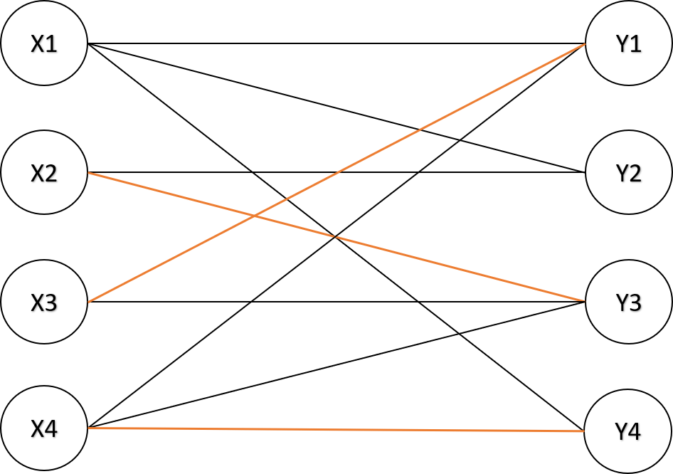
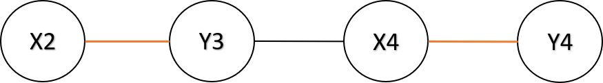
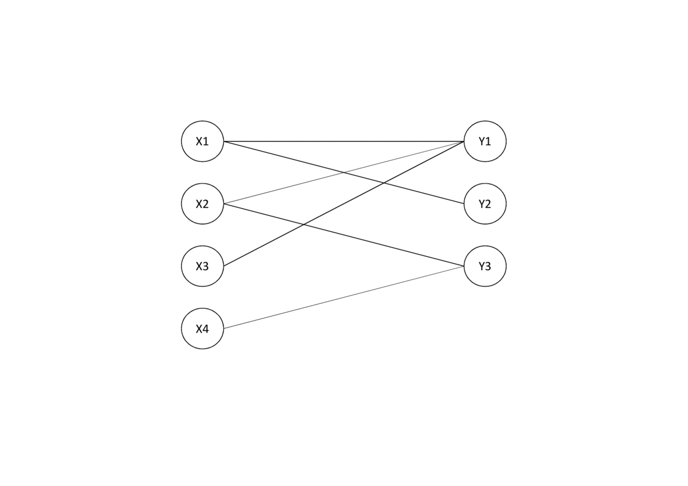

二分圖（Bipartite graph)
如果一張圖的點可以分成兩個集合，集合內的點彼此沒有邊相連。
性質
- 不存在奇環，奇環為邊數為奇數的環。
- 用兩種顏色塗所有的點，存在至少一種辦法使得任兩相鄰點對顏色相異。（著色問題）
判別二分圖
著色問題可以用來判斷一張圖是否為二分圖，用 color 紀錄每個點的顏色（無色 -1 、白色 0 、黑色 1 )，一開始每個點紀錄為無色。利用 BFS 或 DFS 遍歷所有點，首先，判斷一個點是否有顏色，如果點為無色，就讓這個點變成白色，否則照舊。接著，讓其他相鄰的點的顏色和這個顏色相異，如果在遍歷途中發現有任意相鄰點對同色，則該圖不是二分圖。
1 2 3 4 5 6 7 8 9 10 11 12 13 14 15 16 17 18 19 20 21 22 23 24 25 26 27 28 29 30 31 32 33 34 35 36 37 38 39 40 41 42 | |
匹配
- 匹配：在圖論中是指一個邊集合，集合中任意兩條邊沒有共同頂點。
- 匹配點、非匹配點、匹配邊、非匹配邊
- 最大匹配（最大邊獨立集）：一張圖的所有匹配中，有著最大邊數的匹配。
- 完美匹配：如果一個匹配包含所有的點，那麼該匹配稱為「完美匹配」。
- 最大權重匹配：一張圖的所有匹配中，有著最大邊權重和的匹配。
二分圖最大匹配
匈牙利演算法 (Hungarian algorithm)
交錯路 (Alternating Path) 及增廣路 (Agumenting Path)
交錯路：依序經過非匹配邊、匹配邊、。。。、非匹配邊、匹配邊、非匹配邊所形成的路徑。
增廣路：從非匹配點出發，經過交錯路，最後經過另一個集合的非匹配點，該路徑稱為增廣路。把增廣路上的非匹配邊和匹配邊替換，就能使匹配數量 。
 
Berge's Theorem
如果一個匹配 找不到任何增廣路，那麼 就是一個最大匹配。
此定理可延伸出，如果一個非匹配點 找不到增廣路，那麼存在不包含 的最大匹配 。
根據 Berge's Theorem，我們得到一個算法：枚舉集合 未匹配的點 ，如果找到增廣路，則翻轉所有邊，否則就把 移出匹配。找出增廣路的方式為，從 集合的每個點 開始 DFS，去拜訪集合 的每個和 相連的點 ，如果 是未匹配點，則找到一條增廣路；如果 是匹配點，則從和 匹配點 開始 DFS 尋找增廣路。
s 集合個每個點都匹配一次，最多有 個點，每次 DFS 的最多找到長度為 的增廣路，整體時間複雜度為 。

1 2 3 4 5 6 7 8 9 10 11 12 13 14 15 16 17 18 19 20 21 22 23 24 25 26 27 28 29 30 31 32 33 34 35 | |
獨立集和覆蓋
- 最大邊獨立集 （最大匹配）：為圖上最大的邊集使得每個點至多和一條邊相鄰。
- 最大點獨立集 ：是一張圖中，最多有幾個點互不相鄰的最大集合。
- 最小點覆蓋 ：最小的點集使得圖上每條邊都至少與點集中一個點相鄰。
- 最小邊覆蓋 ：最小的邊集使得圖上每個點都至少與邊集中一條邊相鄰。
根據 König’s theorem，可以整理出下列事項：
下列說明，在找出最大匹配後，如何找出這些問題的其中一組解：
- 最小點覆蓋：對於每個匹配邊上的兩點，如果有一個匹配點有連接到未匹配點，將該點加入最小點覆蓋中，否則任選一點加入最小點覆蓋中。
- 最大點獨立集：剛好跟最小點覆蓋互補。
- 最小邊覆蓋：最大匹配的邊，加上每個未匹配點所連接的任意一條。
因此，只要算出最大匹配，就可以算出其他問題。
二分圖最大權重匹配
Kuhn-Munkres Algorithm
KM 演算法 (Kuhn-Munkres Algorithm) 用於二分圖最大權重匹配，此演算法必須應用到完美匹配的情況，我們要增加一些點或邊來滿足：
-
兩集合的點數量要一致，如果不一樣的話，少的集合要補多一些點。
-
每個點都要和另外一個集合的所有點相連，如果邊不存在，請補上一條權重為 的邊。
KM 演算法直接在點上調整權重，比在邊上調整權重簡單，作法是在每個點加上一個 vertex labeling， 分別為 集合的 vertex labeling。
於是這個問題就變成最小化 ，我們透過不斷調整 vertex labeling，找到一條匹配邊皆滿足 的增廣路，最後得出的匹配邊即為答案。把一個最大化所有匹配邊的權重和，轉換成最小化所有點的權重和，在線性規劃中，是 primal problem 和 dual problem 的轉換。
1 2 3 4 5 6 7 8 9 10 11 12 13 14 15 16 17 18 19 20 21 22 23 24 25 26 27 28 29 30 31 32 33 34 35 36 37 38 39 40 41 42 43 44 45 46 47 48 49 50 51 52 53 54 55 56 57 58 59 60 61 62 63 64 65 66 67 68 69 70 71 72 73 74 75 76 77 78 79 80 81 82 83 84 85 86 87 88 89 90 | |
更多的參考程式碼可參考 二分圖最大權完美匹配 KM 算法 - 日月卦長的模板庫 和 二分图最大权匹配 - OI Wiki 。
例題練習
- 二分圖判定
- 二分圖最大匹配
- 獨立集和覆蓋
- 二分圖最大權匹配